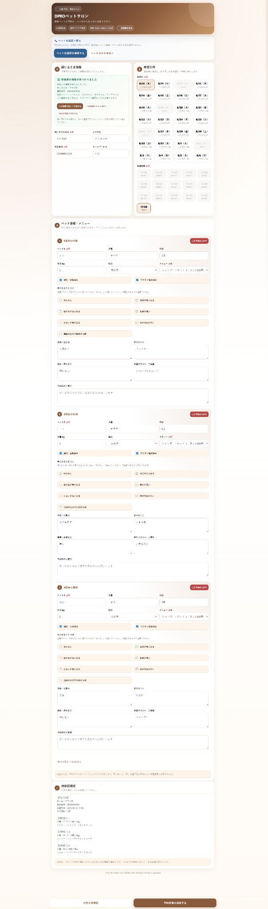
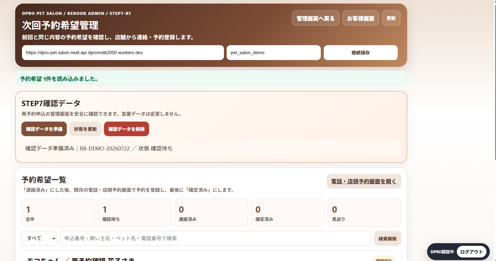
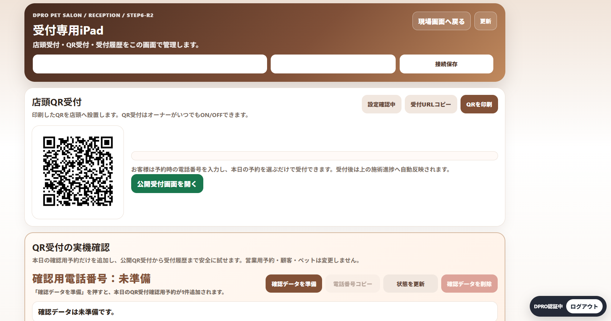
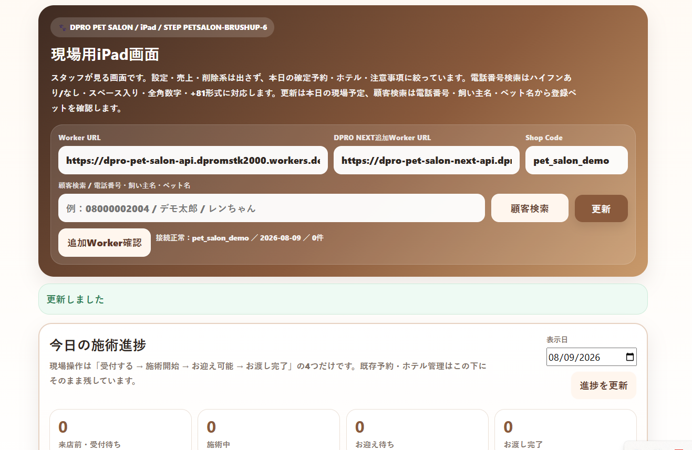

DPRO RESERVATION SYSTEM
予約のかたちは、お店によって違う。
日時予約、順番受付、レッスン、訪問、相談、受取、宿泊・預かり。DPROは、業種や営業スタイルに合わせて、予約の前後の業務までつなぎます。
日時予約担当者選択順番受付定員・体験訪問事前受付

順番・当日受付 VISIT
訪問・出張予約
ONE SIZE DOES NOT FIT ALL
予約システムは、全部同じではありません。
だからDPROは、予約をひとつの型にはめません。
RESERVATION BY INDUSTRY
業種が変われば、予約の見え方も変わる。
同じ「予約」でも、必要な画面や管理の流れは違います。写真から近い業種を選ぶと、代表DPRO製品へ絞り込みます。
7 RESERVATION TYPES
あなたの予約は、どのタイプ？
まずは「何を予約したいか」から選べます。担当者指名や事前受付などは、必要に応じて組み合わせます。
QUICK FINDER
3つの質問で、近い予約タイプをチェック。
回答に合わせて、下の代表DPRO製品を予約タイプ別に絞り込みます。担当者選択や顧客履歴などは、製品ごとの業務に合わせて組み合わせます。
「おすすめを見る」を押すと、下の代表製品が絞り込まれます。
BY INDUSTRY
あなたの業種なら？
近い業種から、予約の入口・受付・管理までを確認できます。代表16製品を掲載し、7つの予約タイプすべてから実際のDPRO製品へ進めます。
HAIRSALON
日時予約美容サロン
OWNER / STAFF予約・顧客管理
MEDICAL
VET
順番・日時予約動物病院
OWNER / STAFF予約・顧客管理
YOGA
SCHOOL
PHOTO
日時予約写真館・フォトスタジオ
OWNER / STAFF予約・顧客管理
 PETSALON
PETSALONYAKINIKU
日時・順番焼肉店
OWNER / STAFF予約・顧客管理
HOUSEKEEP
訪問予約家事代行
OWNER / STAFF予約・顧客管理
CARETAXI
訪問・送迎介護タクシー
OWNER / STAFF予約・顧客管理
VISIT_AHAKI
ESTATE
GYOSEI
相談・面談行政書士
OWNER / STAFF相談・案件管理
TAKEOUT
CAKE
事前予約・受取ケーキ・洋菓子
OWNER / STAFF製作・受渡し管理
REAL DPRO SCREENS
説明だけではなく、実際の画面で確認。
ここでは、DPROの実運用画面を直接キャプチャした素材だけを掲載しています。お客様の予約からOwner・受付・現場まで、同じ業務がつながることを見せます。

お客様の予約画面
日程・詳細情報を入力し、内容確認から予約確定へ進む実画面。

Ownerの予約管理
確認待ち・連絡済み・確定済みなど、次回予約希望を一つの画面で管理。

受付専用iPad
店頭QR受付を用意し、来店時の受付導線を店舗側で管理。

現場スタッフの進捗画面
当日の施術進捗や顧客検索を、現場用iPadから確認。
予約→受付→Owner確認→現場進捗同じ業務の流れでつながる。
CLICK TO LIVE DEMO
業種が変われば、予約画面も変わる。
初期表示では読み込みません。見たい業種を選んだときだけ、現在のDPRO公開デモをページ内に読み込みます。
LIVE DEMO上の業種を選ぶと、ここに実際の公開デモを読み込みます。初期iframe 0 / 必要時のみロード
ONE RECEPTION HUB
LINEでも、WEBでも、電話でも。受付はひとつへ。
お客様の入口を一つに限定するのではなく、入口は自由。店舗側の管理はDPROに集約する考え方です。
↓
DPRO SYSTEM予約・受付情報を一元管理
BEYOND RESERVATION
予約して、終わりではありません。
予約を顧客との関係の入口に。来店・訪問後の業務、履歴、次回予約までつなげます。
予約を、顧客との関係の入口に。
THREE EXPERIENCES
お客様も、スタッフも、オーナーも。
CUSTOMERスマホ予約空き枠・受付・マイページ
お客様
必要な操作を、できるだけ簡単に。
STAFF今日の予約受付・顧客・進捗
スタッフ
今日やることが、すぐ分かる。
OWNER店舗管理予約・顧客・設定・状況
オーナー
店舗全体を、一つの画面から。
DPRO DIFFERENCE
「予約フォーム」ではなく、 業種の流れをつくる。
一般的な予約フォームDPRO
予約を受ける予約前後までつなぐ
共通の型業種別の流れ
予約情報が中心顧客・履歴・受付へ接続
入口ごとに管理LINE / WEB / 電話 / 店頭を集約
FAQ
よくあるご質問
LINEから予約できますか？
LINE公式を予約・受付の入口として活用する構成が可能です。対応内容は各DPROシステムによって異なります。
スタッフごとに予約できますか？
担当スタッフ選択に対応する製品があります。美容サロンなど、スタッフ別管理が必要な業種で活用できます。
順番待ちにも対応できますか？
医療・動物病院・飲食店など、当日順番受付を持つ製品があります。
訪問サービスでも使えますか？
訪問マッサージ・鍼灸、家事代行、介護タクシーなど、訪問先や担当者を含めて管理する製品があります。
LET'S FIND YOUR FLOW
あなたのお店には、どんな予約が合いますか？
今の予約方法や営業スタイルを聞きながら、必要な予約・受付・管理の仕組みを一緒に整理します。